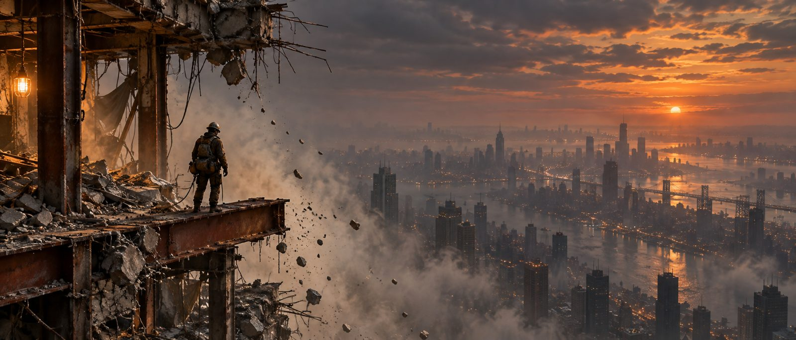

A demolition crew is taking a hyperscale tower apart floor by floor for its rare-earth bones, and the only way in is to outrun the same public countdown every other crew can hear too.

Someone with fifty hours in ARC Raiders or Marathon who's good at the genre and tired anyway — tired of sprinting the last two hundred meters to a landing zone only to eat a shotgun blast from someone who's been lying in the grass outside it for ten minutes. They want the loot-and-live tension. They just want the exit to be a race, not a known camera angle.
Players who bounced off Tarkov-style all-or-nothing loss but loved what Escape from Duckov proved: a lower-stakes, PvE-first entry point can still be a real extraction shooter. Cutline pairs that on-ramp with full PvP stakes for players who want them, in the same tower.
Strip a condemned floor for salvage while a broadcast demolition countdown ticks toward the charge under your feet, then gamble on reaching whichever stairwell or shaft the collapse hasn't sealed yet. Everyone in the tower hears the same warning at the same time.
Clear three floors tracking two numbers: the public burn schedule and the independent structural decay under your boots. Cut a beam to seal a rival crew's route. Call your cage, lose the fight for its three seats, and rappel down the tower's face to call a second one.